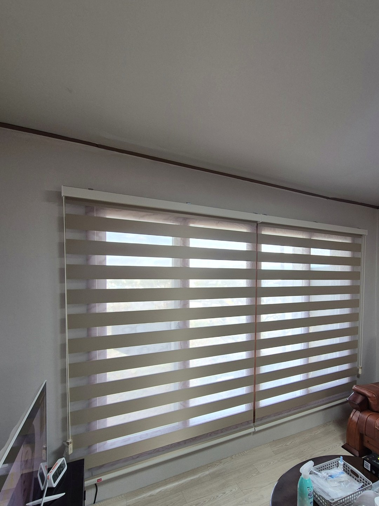
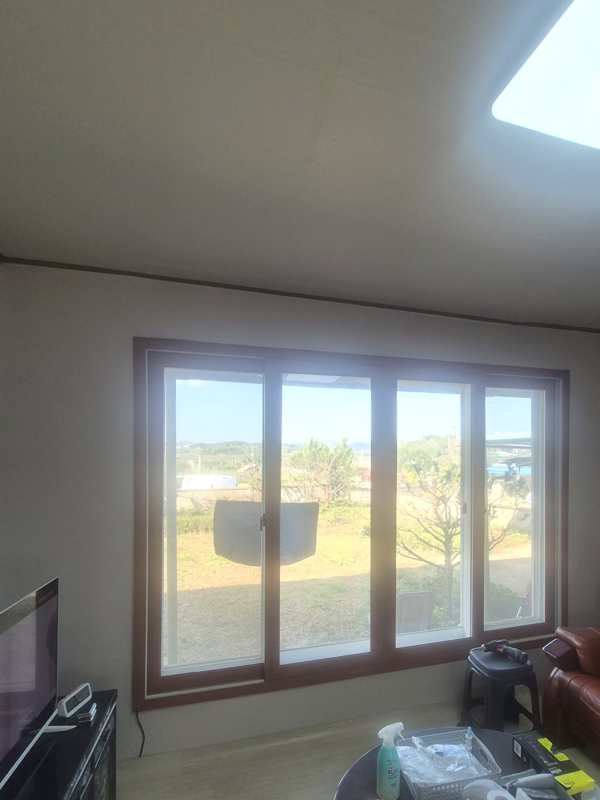
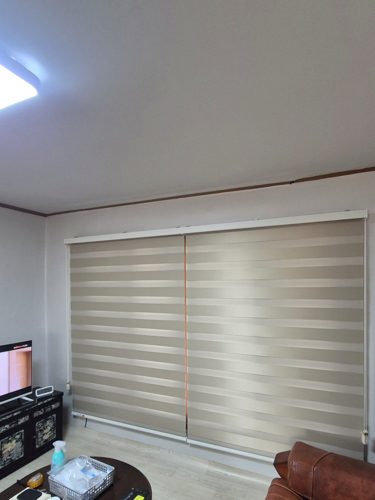
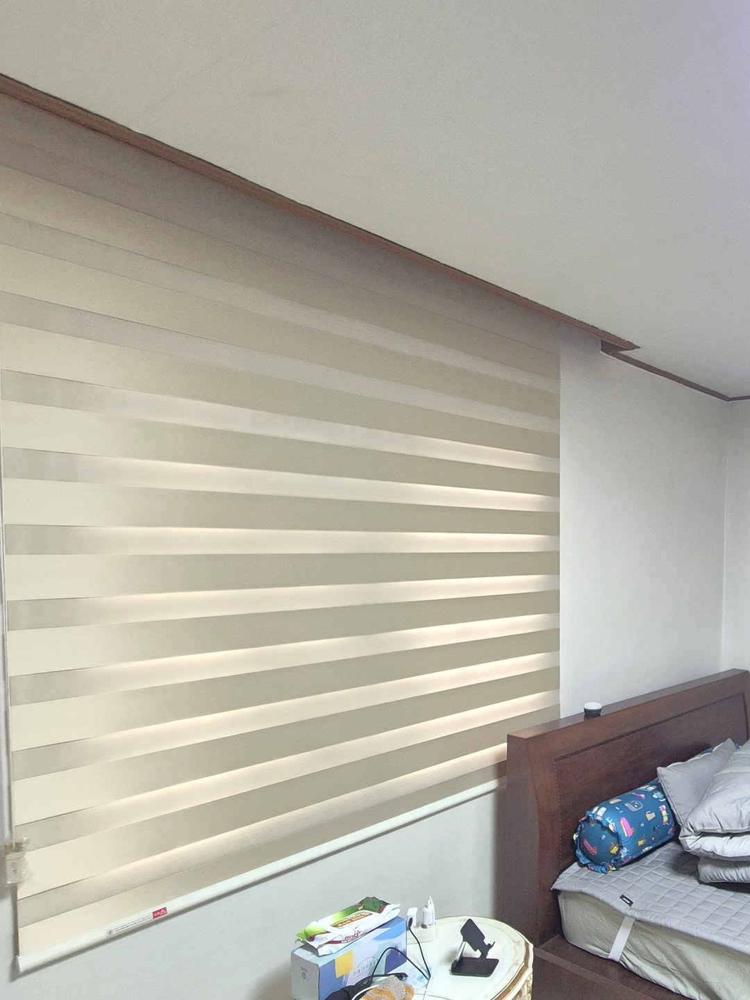

2026년 10월 17일 시공
의성 단밀면 단독주택
거실·작은방·안방 암막콤비블라인드 시공후기

시공 장소는 경북 의성군 단밀면의 단독주택입니다.
요양차 이곳으로 내려오신 고객님 댁으로, 거실과 작은방, 안방 세 곳에 블라인드를 설치했습니다.
세 곳 모두 같은 제품, 베이지색 암막콤비블라인드로 맞췄습니다.
단독주택 큰 창은 두 장으로 나눠 답니다
거실 창은 나무 틀로 된 네 칸짜리 미닫이로, 폭이 꽤 넓었습니다.
이런 창을 블라인드 한 장으로 덮으면 원단이 무거워져 줄을 당기기 힘들고, 한쪽만 열고 싶을 때도 통째로 올려야 합니다.
그래서 창 가운데를 기준으로 두 장으로 나눠 달았습니다. 한쪽만 올려 마당을 내다보고, 다른 쪽은 내려 둘 수 있습니다.


쉬는 시간이 긴 집이라 암막 원단으로
요양하러 오신 댁은 낮에도 방에서 쉬시는 시간이 길 수 있습니다.
일반 콤비블라인드는 겹쳐 내려도 빛이 꽤 들어오기 때문에, 원단에 빛 차단층이 있는 암막콤비를 골랐습니다.
안방은 벽 두 면에 창이 하나씩 있어, 두 창을 같은 높이와 색으로 맞춰 방이 한 덩어리로 보이게 했습니다.

설치 후 알아 두실 점
암막콤비는 원단은 빛을 잘 막지만 블라인드 양옆과 아래로 빛이 조금 새어 들 수 있어, 커튼처럼 방이 완전히 어두워지지는 않습니다. 낮잠을 깊게 주무셔야 한다면 블라인드 위에 커튼을 한 겹 더하는 방법도 있습니다.
상담 전에 준비해 주시면 좋은 것
창 전체가 나오게 조금 떨어져서 한 장, 창틀 위쪽 벽이 보이게 한 장 찍어 주세요.
면 단위 시골집도 출장이 가능하며, 사진을 먼저 보고 대략적인 견적을 안내해 드립니다.